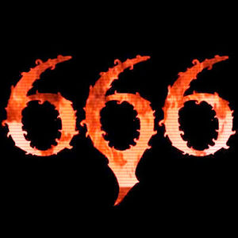

Año 666
 De: La Frikipedia, la enciclopedia extremadamente seria.
De: La Frikipedia, la enciclopedia extremadamente seria.
 TEH END OF TEH WORLD, MOTHAFUCKAS El año 666 es el año en el que vino el demonio con una escopeta a la tierra y se cargo a los Reyes catolicos.Tambien fue un año bastante importante en cuanto a religiones,ya creo muchas religiones,entre ellas el budismo.
Acontecimientos
- 1 de enero: Resaca de la fiesta de ayer
- 2 de enero:Se fundan la religion de los Testigos de Jehova
- 5 de enero:Nace Bob Marley
- 10 de enero:Bush se viola a Ronald Mc'toland en una conferencia de prensa
- 15 de enero:Muere Bob Marley a causa de una sobredosis de porros.Volvería a reencarnarse más adelante
- 27 de enero:Muere Pepe Leches
- 4 de Febrero:Aparecen los primeros Limos
- 8 de Febrero:Se ve por primera vez al bigfoot
- 9 de Febrero:Se anuncia el fin de los tiempos el 6-6-666
- 7 de Marzo: Iron Maiden tocan en concierto y miles de canis les arrojan piedras.
- 19 de Marzo:Nace el Jesucristo Follador
- 23 de Marzo:Youtube supera el millon de visitas
- 4 de Abril:Se funda el Satanismo
- 30 de Abril:Aparecen los primeros góticos
- 5 de Mayo:Casi 2000 inmigrantes saltan la valla de Melilla
- 9 de Mayo:Muere el Papa Bendedicto X
- 26 de Mayo:Chuck Norris intenta eliminar a la humanidad a base de pellizcos en los ojos. Los supervivientes se hicieron llamar Chinos
- 6 de Junio:Viene Satanás y mata a los Reyes Catolicos.Antes de morir ordenan que todo el mundo se suicide. Algunos listos sobreviven y los antepasados de Canis mueren. Nace Eddie.También nace Franco.
- 19 de Julio:Camela toca en concierto y los Iron Maiden y un ejercito de heavys los arrasan con bazookas y armamento nuclear.
- 33 de Juliembre:A algún espabilado sin determinar y sin escrúpulos se le ocurre la
puta genial idea de dominar el mundo
- 27 de Agosto:Sale a la venta el Mortal Monkloa.
- 29 de Agosto:Nace el Penedector.
- 27 de Octubre:Se inaugura la Torre Goon.
Autor(es):
- Max Slug
- Fedeloko
- Iisa ceppii
- Anarkangel
- Jurliki
- Takeogr
- 62666
- Generibot
Frikipedia 2005-2016, Licencia
GFDL 1.2 - Extraído por FrikiLeaks